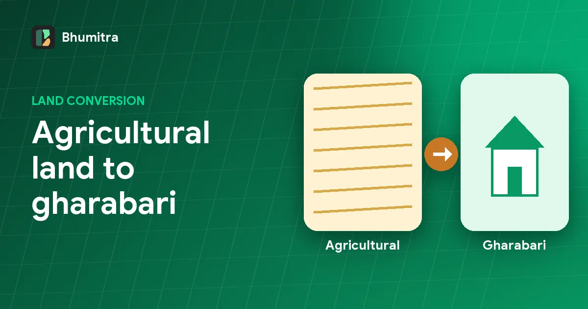

Ownership
Land conversion in Odisha: agricultural land to gharabari, process and fees
How to convert agricultural land to homestead (gharabari) in Odisha under Section 8-A of the OLR Act: who can apply, documents, how the conversion premium is worked out, and how to check status.

Many plots sold as "house plots" in Odisha are still recorded as agricultural land in the Record of Rights. To build a house legally, get a building plan approved, or take a home loan, the land usually has to be converted, most often to gharabari (homestead).
What conversion changes
Conversion changes the kisam (land type) in the RoR from an agricultural class, such as sarad or bahal, to a non-agricultural one, such as gharabari. It's done under Section 8-A of the Odisha Land Reforms (OLR) Act, 1960. Our kisam guide explains the common land types.
When you need conversion
- You want to build a house or shop on agricultural land.
- You need a building plan approval from a development authority or municipality.
- A bank is lending against the plot for construction.
- You're buying a plot marketed as residential and want it to be residential on paper too.
The conversion process
- Applyto the Tahasildar, online or at the office
- Field reportRevenue Inspector checks the land
- Premium worked outbased on the land's value
- Pay premiumand any other charges
- Order and RoR changekisam updated, e.g. to gharabari
Documents usually needed
- Current RoR in the applicant's name (complete mutation first if you just bought it).
- Land revenue receipt showing khajana is paid up.
- Plot map or sketch showing the area to be converted.
- Applicant's ID proof.
- A copy of the sale deed, if the land was purchased.
Requirements vary by district and change over time. Check with the Tahasil or the state's revenue services portal before applying.
How the conversion fee is worked out
The fee is a conversion premium, calculated as a share of the land's value under the state's conversion rules. The amount depends on:
- the location, for example inside a municipality or development authority area versus a rural village,
- the new use, such as homestead or commercial,
- the area being converted.
Because the premium is linked to land value, it helps to know the plot's government benchmark value beforehand. Bhumitra shows the benchmark rate for a plot where one is published, along with its current kisam.
Checking conversion status
Keep the case number. Track it on the revenue services portal or at the Tahasil. Once the order is passed, check the RoR: the kisam for the plot should now read the new use. Until it does, treat the land as agricultural.
Things that block conversion
- Government or common land such as gochar (grazing) or water bodies. These generally can't be converted by a private owner. See government vs private land.
- Land under restrictions, for example land transferred from a Scheduled Tribe owner without the required permission.
- Mismatched records: the applicant isn't the recorded owner, or the area doesn't match the RoR.
- Unpaid land revenue.
Buying a plot? Ask this first
If a seller says a plot is "residential", open its RoR and read the kisam. If it's still agricultural, ask whether conversion has been applied for and see the order. Factor the premium and the time into your price.
Frequently asked questions
What is land conversion in Odisha?
Land conversion is the change of an agricultural plot's recorded use to a non-agricultural purpose, such as homestead (gharabari) or commercial use. It is done under Section 8-A of the Odisha Land Reforms Act, 1960, by the Tahasildar or another authorised officer.
How much are land conversion fees in Odisha?
The fee is a conversion premium worked out as a share of the land's value under the state's rules, and it varies by location and purpose. The Tahasil calculates it during the case. Check the current rates with the Tahasil before applying.
Can I build a house on agricultural land in Odisha without conversion?
Generally no. Building on land recorded as agricultural normally needs conversion first, and development authorities and banks will ask for the conversion order.
How do I check land conversion status?
Track the case with its number on the state's revenue services portal or at the Tahasil. Once allowed, the kisam in the RoR changes to the new use.